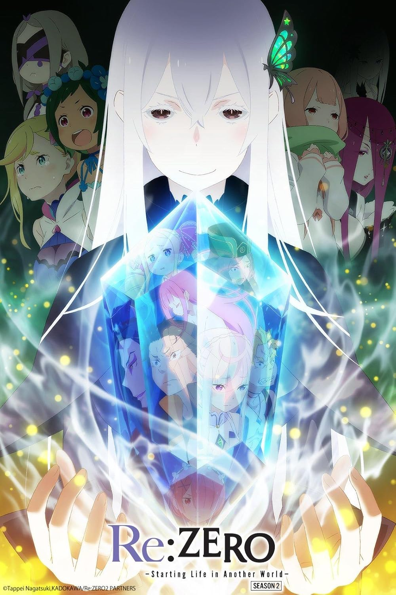
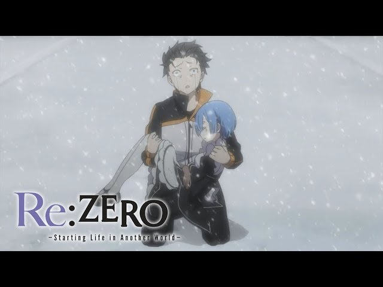

Emilia
Una medio-elfa amable y compasiva, es la principal candidata al trono y el interés amoroso de Subaru.

Rem
Una sirvienta demonio leal y valiente, famosa por su devoción a Subaru y su hermana Ram.
Curiosidades
- El autor de la novela ligera es Tappei Nagatsuki.
- La serie cuenta con varias temporadas y OVAs.
- Re:Zero es conocido por su trama intensa y giros inesperados.